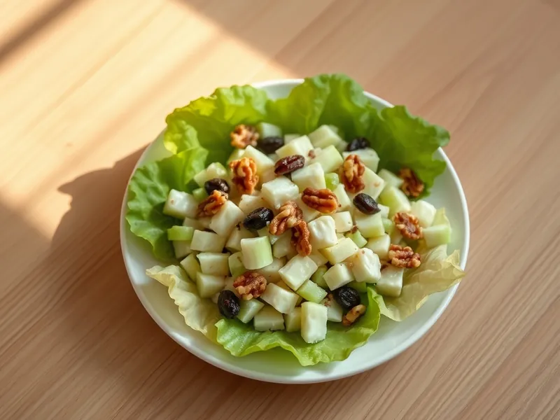

Салат «Вальдорф» с сельдереем, яблоком и орехами
Классический американский салат из стеблей сельдерея, яблок, грецких орехов и изюма
15 мин4 порц.279 ккал на порциюБ 5 · Ж 21 · У 19Американская кухня
Открыть в приложении: порции, таймеры, список покупок
Продукты на 4 порц.
- Сельдерей200 г
- Яблоки2 шт
- Грецкие орехи60 г
- Изюм40 г
- Майонез2 ст. л.
- Йогурт без добавок2 ст. л.
- Лимон0,2 шт
- Салат листовой по желаниюпо вкусу
- Соль1 щеп.
Как готовить
- Изюм залейте горячей водой на 10 минут, затем откиньте и обсушите.
- Яблоки очистите от сердцевины и нарежьте кубиком, сразу сбрызните лимонным соком, чтобы они не потемнели.
- Стебли сельдерея нарежьте тонкими полукольцами, орехи крупно порубите.
- Смешайте майонез с йогуртом и щепоткой соли.
- Соедините яблоки, сельдерей, орехи и изюм, заправьте и выложите на листья салата.
Совет. Берите кисло-сладкие хрустящие яблоки, мучнистые сорта превратятся в кашу. Орехи вкуснее, если их прокалить 3 минуты на сухой сковороде.